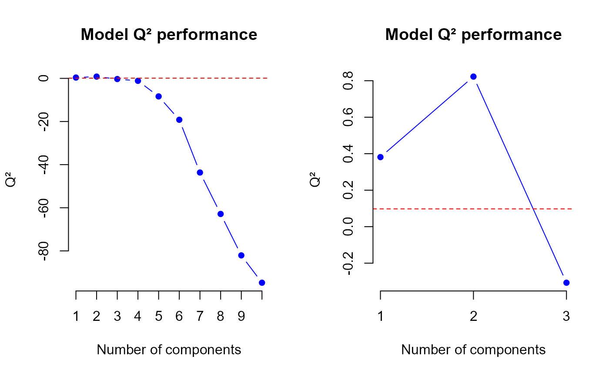

PLS function performance assessment using Q2 indicator.
q2.PLS.RdThe q2.PLS function allows to assess PLS models using \(Q2\) criterion.
This function returns a list including \(Q2\) values for each number of components.
A plot allows to visualize the model performance according to the number of components.
Details
A suggestion about the number of components selection is also given by Q2 criterion. Endly, other indicators are given such as PRESS and RSS for each number of components and such as \(PRESSj\) and \(RSSj\) (matrices) for a given number of components and for a given column of Y dataset.
Value
\(PRESSj\) and \(RSSj\) are matrices of size \(ncomp.max\) x \(q\). The row sums of \(PRESSj\) and \(RSSj\) give respectively PRESS and RSS.
References
K.-A. Le Cao, Zoe Welham, Multivariate data integration using R (pages 172 to 174), MixOmics
Examples
library(sgPLSdevelop)
d <- data.create(n = 50, p = 10, q = 2, list = TRUE)
X <- d$X
Y <- d$Y
ncomp.max <- 10
model.pls <- PLS(X = X, Y = Y, ncomp = ncomp.max, mode = "regression")
q2.res <- q2.PLS(model.pls, ncomp.max = ncomp.max, mode = "regression")

# q2 values
q2.res$q2
#> [1] 5.539087e-01 4.057099e-01 -5.844426e-01 -1.584254e+00 -6.826693e+00
#> [6] -1.345286e+01 -3.202578e+01 -4.689224e+01 -6.246794e+01 -1.676202e+04
# PRESS values
q2.res$PRESS
#> [1] 43.716949 20.947409 11.857546 9.278030 8.962343 9.101646
#> [7] 9.931746 11.114458 13.215030 3432.696560
# RSS values
q2.res$RSS
#> [1] 35.2477836 7.4837334 3.5902166 1.1450996 0.6297472 0.3007271
#> [7] 0.2320722 0.2082158 0.2047779 0.2040215
# PRESS values by column
q2.res$PRESSj
#> Y1 Y2
#> [1,] 37.297558 6.419391
#> [2,] 17.648120 3.299289
#> [3,] 9.556047 2.301499
#> [4,] 7.830616 1.447415
#> [5,] 7.494771 1.467572
#> [6,] 7.378585 1.723061
#> [7,] 7.870608 2.061138
#> [8,] 8.666772 2.447686
#> [9,] 9.616132 3.598897
#> [10,] 2989.355370 443.341190
# RSS values by column
q2.res$RSSj
#> Y1 Y2
#> [1,] 30.5485479 4.69923571
#> [2,] 4.6530060 2.83072744
#> [3,] 1.7242712 1.86594546
#> [4,] 0.6831842 0.46191536
#> [5,] 0.4972907 0.13245646
#> [6,] 0.1774595 0.12326751
#> [7,] 0.1265549 0.10551728
#> [8,] 0.1155939 0.09262194
#> [9,] 0.1146747 0.09010324
#> [10,] 0.1145965 0.08942498